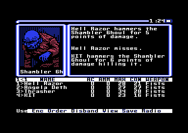

<meta charset="utf-8">
<meta name="viewport" content="width=device-width, initial-scale=1">
<title>{{title}}</title>
<link rel="preconnect" href="https://fonts.googleapis.com">
<link rel="stylesheet" href="https://fonts.googleapis.com/css2?family=Lato:wght@400;700;900&family=IBM+Plex+Mono:wght@400;500&display=swap">
<link rel="stylesheet" href="reference/wasteland-page.css">
<!-- tabs -->
<header class="hero">
  <p class="eyebrow">{{platform}} · {{year}} · {{publisher}}</p>
  <h1>{{title}}</h1>
  <p class="sub">Every check and every shot comes down to two dice that are thrown again on a double, and Wasteland’s dice <a href="discoveries.html#wl-doubles">come up doubles one throw in five</a>.</p>
</header>
<main class="wrap">
<section id="wl-dice" data-part="">
<p class="fig">01 · Checks and shots</p>
<h2 class="t">Two dice that keep rolling</h2>

<p class="lede" data-part="engine">Every skill check, attribute check, and party member's shot comes down to one throw: two six-sided dice, added up, and thrown again whenever they match. The repeats add on, so a pair of sixes followed by a 3 and a 4 makes 19 (<code>$0845</code>). Each repeat is a one-in-six chance, so high totals are rare but possible.</p>

<p data-part="engine">A check has a target of 15 + 5 × its difficulty (<code>$0867</code>). For a skill check, the throw plus the attribute that goes with the skill plus 4 for each level of the skill must reach it (<code>$0C6A</code>). The table at <code>$0DD8</code> pairs each skill with its attribute, such as Climb with AGL, Picklock with DEX, and Medic with IQ. An attribute check adds the attribute alone (<code>$0D0A</code>). A throw under 5 fails whatever the bonus, which is one throw in nine.</p>

<p data-part="">Every throw of 5 or more is added to the character's experience, pass or fail (<code data-part="engine">$0C41</code>). A pass can also raise the skill a level, but only while the level is below the character's rank and below the difficulty. Then a d10 no higher than half of (difficulty − level), rounded down, plus 1 raises it (<code data-part="engine">$0CA2</code>). A new character has rank 1 (<code data-part="ranger">$7FDD</code>), so no skill improves by use before the first promotion.</p>

<p data-part="">Players levelled whole parties on this rule. On the <a href="https://wastelandrangerhq.github.io/hq-grid/underground.html#gambling">Wasteland Ranger HQ-Grid's Underground</a>, D. Sinner (4 May 1998) played the Desert Nomads' slot machine and then three card monty in Las Vegas, reckoned on about ten levels from a session, and guessed <q>that you get one xp for every $ you make</q>. The money plays no part. A pull of the slot machine tests the player's Gamble and LK by turns, up to ten times and hardest first, until one passes (<span data-part="map-08"><code>$3B9C</code></span>), and a hand of monty tests LK and Gamble (<span data-part="map-41"><code>$3BC9</code></span>). The experience is the dice of each of those throws that came to 5 or more, won or lost.</p>

<div class="plate" id="wl-dice-checks" data-part="engine">
  <div class="wl-dice-seg" id="wl-dice-c-kind" role="group" aria-label="Kind of check">
    <button type="button" class="wl-dice-segb" data-kind="skill" aria-pressed="true">Skill check</button>
    <button type="button" class="wl-dice-segb" data-kind="attr" aria-pressed="false">Attribute check</button>
  </div>
  <div class="wl-dice-grid">
    <div class="wl-dice-ctl">
      <label class="wl-dice-k-skill" for="wl-dice-c-skill">Skill</label>
      <select class="wl-dice-k-skill wl-dice-wide" id="wl-dice-c-skill"></select>
      <label class="wl-dice-k-attr" for="wl-dice-c-attr" hidden>Attribute</label>
      <select class="wl-dice-k-attr wl-dice-wide" id="wl-dice-c-attr" hidden></select>
      <label class="wl-dice-k-skill" for="wl-dice-c-level">Level</label>
      <input class="wl-dice-k-skill" type="range" id="wl-dice-c-level" min="0" max="10" value="2">
      <output class="wl-dice-k-skill" id="wl-dice-c-level-o" for="wl-dice-c-level"></output>
      <label for="wl-dice-c-val" id="wl-dice-c-val-l">AGL</label>
      <input type="range" id="wl-dice-c-val" min="1" max="30" value="14">
      <output id="wl-dice-c-val-o" for="wl-dice-c-val"></output>
      <label for="wl-dice-c-diff">Difficulty</label>
      <input type="range" id="wl-dice-c-diff" min="0" max="31" value="3">
      <output id="wl-dice-c-diff-o" for="wl-dice-c-diff"></output>
      <label class="wl-dice-k-skill" for="wl-dice-c-rank">Rank</label>
      <input class="wl-dice-k-skill" type="range" id="wl-dice-c-rank" min="1" max="20" value="4">
      <output class="wl-dice-k-skill" id="wl-dice-c-rank-o" for="wl-dice-c-rank"></output>
    </div>
    <div>
      <div class="wl-dice-big"><span id="wl-dice-c-p">&ndash;</span> <span class="wl-dice-unit">chance to pass</span></div>
      <p class="wl-dice-line wl-dice-game" id="wl-dice-c-game"></p>
      <p class="wl-dice-line" id="wl-dice-c-sum"></p>
      <canvas class="wl-dice-cv" id="wl-dice-c-cv" role="img" aria-label="Chance of each total of the throw: under 5 fails at once, totals at or above the line pass"></canvas>
      <p class="wl-dice-line" id="wl-dice-c-learn"></p>
    </div>
  </div>
  <div class="wl-dice-rollrow">
    <button type="button" class="wl-dice-btn" id="wl-dice-c-roll">Roll</button>
    <div class="wl-dice-rollout"><div id="wl-dice-c-out" aria-live="polite"></div><p class="wl-dice-tally" id="wl-dice-c-tally"></p></div>
  </div>
  <p class="wl-dice-note"></p>
  <p class="cap">The chance is exact for fair dice: every way the throw can reach each total is counted, doubles and all. The chart is the throw alone; red totals fail at once. Roll runs the game's own check, ported from the engine (<code>$0C29</code>, <code>$0D0A</code>) and tested against the original code on a 6502 simulator: 27,324 skill checks over every skill, levels 0 to 10 and difficulties 0 to 31, and 3,072 attribute checks, with the same random bytes, gave the same results and used the same bytes.</p>
</div>

<p data-part="game">A shot uses the same throw (<code>$A584</code>). To it are added DEX, 4 for each level of the weapon's skill, and the fire mode: 4 for a burst, the rounds left in the gun for automatic fire, and 10 for an explosive (<code>$A5D6</code>). A full Uzi on automatic adds 40. The total must reach a target that grows with the distance, rounded up to 5 feet, at one of three rates (<code>$A793</code>, <code>$BD48</code>). Pistols, thrown weapons, and explosives start at 0 and add 5 for every 5 feet. SMGs, carbines, the Flamethrower, the Ion beamer, the Mangler, and the Sabot rocket start at 10 and add 2. Every other gun, from the rifles to the Meson cannon, the LAW, and the RPG-7, starts at 20 and adds 1, so beyond 25 feet a rifle is an easier shot than a pistol, and beyond 50 feet than an SMG.</p>

<p data-part="game">Nothing in that total can turn against the shooter. It is kept in 16 bits and stops at 65,535 (<span data-part="engine"><code>$079D</code></span>), each level of skill adds 4 however high the level goes, and the skill never enters a hit's damage. So every level of Energy weapon makes a shot likelier to hit. J. Webb wrote on the <a href="https://wastelandrangerhq.github.io/hq-grid/underground.html#energyweaponskill">HQ-Grid's Underground</a>, in an undated note, that an Energy Weapon skill level <q>above 8 seems detrimental</q>. The C64's code has no such turn.</p>

<p data-part="game">The target is 7 higher when the monster the code looks at has no gun (<code>$A76E</code>). The line it looks at is the one numbered like the target's group, which is not always the line being shot at (<code>$A74B</code>, <code>$A766</code>).</p>

<p data-part="game">A throw of 3 is not a miss by itself. One more die is thrown, and a 1 spoils the shot however easy it was: rockets and explosives fail to detonate, and any other gun jams and loses its rounds (<code>$A58D</code>). That is one shot in 108.</p>

<p data-part="game">A burst that hits lands 1 to 3 hits (<code>$A0B3</code>), and automatic fire one d4 of hits for every 4 rounds (<code>$A98C</code>). A burst spends 3 rounds and automatic fire all of them, hit or miss (<code>$A02B</code>, <code>$A220</code>).</p>

<p data-part="game">Each hit rolls the weapon's dice, adds the attacker's luck bonus, and takes off the monster's armour roll, stopping at 0 (<code>$A7DE</code>, <code>$A9AD</code>). Anti-tank weapons roll 2 × their dice − the armour when the armour is no more than their dice, and the armour roll is not taken off (<code>$A818</code>, <code>$A677</code>). An explosive rolls its damage once, without luck, and every monster in the group takes it less its own armour roll (<code>$A054</code>, <code>$AA90</code>). The luck bonus has no floor: a hit it takes below 0 kills, as <a href="discoveries.html#wl-unlucky">the throwing knife</a> shows on Discoveries.</p>

<div class="plate" id="wl-dice-attacks" data-part="game">
  <div class="wl-dice-grid">
    <div class="wl-dice-ctl">
      <label for="wl-dice-a-weapon">Weapon</label>
      <select class="wl-dice-wide" id="wl-dice-a-weapon"></select>
      <span class="wl-dice-lab">Fire</span>
      <div class="wl-dice-seg wl-dice-wide" id="wl-dice-a-mode" role="group" aria-label="Fire mode">
        <button type="button" class="wl-dice-segb" data-mode="0" aria-pressed="true">Single</button>
        <button type="button" class="wl-dice-segb" data-mode="1" aria-pressed="false">Burst</button>
        <button type="button" class="wl-dice-segb" data-mode="2" aria-pressed="false">Auto</button>
      </div>
      <label for="wl-dice-a-rounds">Rounds</label>
      <input type="range" id="wl-dice-a-rounds" min="1" max="7" value="7">
      <output id="wl-dice-a-rounds-o" for="wl-dice-a-rounds"></output>
      <label for="wl-dice-a-dex">DEX</label>
      <input type="range" id="wl-dice-a-dex" min="1" max="30" value="14">
      <output id="wl-dice-a-dex-o" for="wl-dice-a-dex"></output>
      <label for="wl-dice-a-level" id="wl-dice-a-level-l">Skill</label>
      <input type="range" id="wl-dice-a-level" min="0" max="10" value="2">
      <output id="wl-dice-a-level-o" for="wl-dice-a-level"></output>
      <label for="wl-dice-a-lk">LK</label>
      <input type="range" id="wl-dice-a-lk" min="1" max="30" value="10">
      <output id="wl-dice-a-lk-o" for="wl-dice-a-lk"></output>
      <label for="wl-dice-a-dist">Distance</label>
      <input type="range" id="wl-dice-a-dist" min="0" max="100" value="30">
      <output id="wl-dice-a-dist-o" for="wl-dice-a-dist"></output>
      <label for="wl-dice-a-armour">Armour</label>
      <input type="range" id="wl-dice-a-armour" min="0" max="15" value="1">
      <output id="wl-dice-a-armour-o" for="wl-dice-a-armour"></output>
      <label for="wl-dice-a-col">Monster has</label>
      <select class="wl-dice-wide" id="wl-dice-a-col"><option value="0">a gun</option><option value="1">no gun: target + 7</option></select>
    </div>
    <div>
      <div class="wl-dice-big"><span id="wl-dice-a-p">&ndash;</span> <span class="wl-dice-unit">chance to hit</span></div>
      <p class="wl-dice-line wl-dice-game" id="wl-dice-a-game"></p>
      <p class="wl-dice-line" id="wl-dice-a-sum"></p>
      <p class="wl-dice-line" id="wl-dice-a-hits"></p>
      <canvas class="wl-dice-cv" id="wl-dice-a-cv" role="img" aria-label="Chance of each amount of damage from one hit after armour"></canvas>
      <p class="wl-dice-line" id="wl-dice-a-dmg"></p>
    </div>
  </div>
  <div class="wl-dice-rollrow">
    <button type="button" class="wl-dice-btn" id="wl-dice-a-roll">Fire</button>
    <div class="wl-dice-rollout" id="wl-dice-a-out" aria-live="polite"></div>
  </div>
  <p class="wl-dice-note"></p>
  <p class="cap">A party member's shot at a monster group, with the guns, rockets and explosives of the item table (<code>$3108</code>). The chart is the damage of one hit after armour; 0 is in red. Fists and hand weapons fight in melee, which works differently and is not shown. Fire runs the game's routines, ported and tested on the simulator against the original code with the same random bytes: the hit roll with every item in the table (15,360 cases), the damage with every item against armour 0 to 15 and beyond (10,368), the hits of bursts and automatic fire (5,436), and the range targets for every distance (606). Which monster each hit lands on is drawn at random too; that draw is left out.</p>
</div>

<p data-part="engine">The chances above are given twice. The first is exact for fair dice. The second comes from the pairs the engine's own code threw on the simulator (<code>$24E3</code>), taking each repeat to fall the way a first pair does. They differ because the game's dice are not fair, as the next section shows.</p>
</section>

<section id="wl-melee" data-part="game">
  <p class="fig">02 · Experience</p>
  <h2 class="t">A kill in melee earns double experience</h2>
  <p class="lede">A monster killed with fists or a hand weapon (a knife, a club, an ax, a chainsaw, or a proton ax) gives its killer twice the experience a shot gives for the same kill. The melee round adds the kill's worth twice, one call after the other. Guns, rockets, and explosives add it once.</p>
  <p>The <a href="https://archive.org/details/c64man_wasteland">manual</a> never spells this out. Its section on hand-to-hand combat (page 16) says the Rangers <q>have an advantage over the citizens in hand-to-hand combat</q>, and nothing about experience. Its section on promotion (page 11) says <q>You're awarded experience points each time you accomplish a difficult task or win a difficult battle</q>, and nothing about how a kill is made.</p>
  <div class="plate" id="wl-xp">
    <div class="wl-xp-grid">
      <div><p class="wl-xp-h">A kill in melee</p><ol class="wl-xp-code" data-part="game"><li><span><code>$815D</code></span><span class="wl-xp-b">AD D6 80</span><span class="wl-xp-i">LDA melee_line_index_op</span></li><li><span><code>$8160</code></span><span class="wl-xp-b">20 E8 A9</span><span class="wl-xp-i">JSR kill_experience</span></li><li><span><code>$8163</code></span><span class="wl-xp-b">20 DD 03</span><span class="wl-xp-i">JSR api_add_experience</span></li><li><span><code>$8166</code></span><span class="wl-xp-b">20 DD 03</span><span class="wl-xp-i">JSR api_add_experience</span></li></ol><p class="wl-xp-n">Experience <b id="wl-xp-n0">0</b></p></div>
      <div><p class="wl-xp-h">A kill by a shot</p><ol class="wl-xp-code" data-part="game"><li><span><code>$A713</code></span><span class="wl-xp-b">AD 5D A6</span><span class="wl-xp-i">LDA damage_line_op</span></li><li><span><code>$A716</code></span><span class="wl-xp-b">20 E8 A9</span><span class="wl-xp-i">JSR kill_experience</span></li><li><span><code>$A719</code></span><span class="wl-xp-b">20 DD 03</span><span class="wl-xp-i">JSR api_add_experience</span></li><li><span><code>$A71C</code></span><span class="wl-xp-b">A9 00</span><span class="wl-xp-i">LDA #$00</span></li></ol><p class="wl-xp-n">Experience <b id="wl-xp-n1">0</b></p></div>
    </div>
    <div class="wl-xp-bar">
      <button type="button" class="wl-xp-btn" id="wl-xp-step">Step</button>
      <button type="button" class="wl-xp-btn wl-xp-ghost" id="wl-xp-reset">Start again</button>
      <p class="wl-xp-say" id="wl-xp-say" role="status"></p>
    </div>
    <p class="cap">The two places the game pays for a kill, from the Source tab: the end of a melee attack and the end of a shot. Step runs one line of each. The kill is worth 40 here, as each Shambler Ghoul was in the emulator. There, three kills in melee each took their killer's experience from 0 to 80, 40 at each of the two calls.</p>
  </div>
  <p>The kill's worth comes from <code>$A9E8</code>: the base value in the monster's record, added once for each of its armour dice and once more. <span data-part="engine"><code>$03DD</code></span> adds that number to the experience of the character whose turn it is, and leaves the number in place. The melee code calls it at <code>$8163</code> and again at <code>$8166</code>, with nothing between that could change the number or the character. A shot calls it once (<code>$A719</code>), and so does an explosion for each monster it kills (<code>$A08A</code>).</p>
  <div class="wl-xp-fig">
    
    <p>The game prints the kill and not the experience, so nothing on the screen shows the second payment. Experience brings promotion, the first at 1,024 for a new Ranger (<span data-part="radio"><code>$7F1B</code></span>). Each promotion gives two points to spend on attributes and a higher rank, and a skill improves with use only while its level is below the rank. Every kill made in melee counts twice toward the next promotion.</p>
  </div>
  <p>Players knew of the double payment. The <a href="https://wastelandrangerhq.github.io/hq-grid/underground.html#nightmare">Wasteland Ranger HQ-Grid's Underground</a> says the Night Terror in Finster's mind maze gives the most experience in the game, <q>and of course twice that if you beat it with melee weapons</q>, and K. Ballou wrote there (<a href="https://wastelandrangerhq.github.io/hq-grid/underground.html#promotions">14 May 1998</a>) that killing it with a proton axe paid 64,000. On the C64 its record has a base of 32,000 and no armour dice (<span data-part="map-23"><code>$42C1</code></span>), so the kill is worth 32,000, more than seven times the next monster's, and a proton ax pays it twice. For a new Ranger, 64,000 is ten promotions at the next radio call; <a href="party.html#wl-ranks">the ranks</a> show why each later kill brings fewer.</p>
</section>

<section id="wl-learn" data-part="game">
  <p class="fig">03 · Learning</p>
  <h2 class="t">No fight can teach a weapon skill past level 7</h2>
  <p class="lede">A fight teaches as it goes: after an attack, the attacker may learn a level of the weapon's skill. How far a fight can teach depends on the target's armour, and no monster in the 42 maps has the armour to teach beyond level 7.</p>
  <p>The lesson needs no check to pass (<code>$AA35</code>). It is the roll a passed check makes, at a difficulty of half the target's armour dice, rounded down, plus 1 (<code>$9ED7</code>, <span data-part="engine"><code>$0CA2</code></span>). The level must be at least 1, below the attacker's rank, and below that difficulty, and then a d10 decides, as it does after a check. A blow in melee that misses teaches nothing (<code>$8103-$810C</code>), and neither does an empty gun.</p>
  <div class="plate">
    <div class="wl-un-tw"><table class="wl-un-t">
      <thead><tr><th>Armour dice</th><th>Highest level a fight teaches</th><th>Monster records</th></tr></thead>
      <tbody>
        <tr><td>0 or 1</td><td>none</td><td>140</td></tr>
        <tr><td>2 or 3</td><td>2</td><td>53</td></tr>
        <tr><td>4 or 5</td><td>3</td><td>40</td></tr>
        <tr><td>6 or 7</td><td>4</td><td>44</td></tr>
        <tr><td>8 or 9</td><td>5</td><td>44</td></tr>
        <tr><td>10 or 11</td><td>6</td><td>51</td></tr>
        <tr class="wl-un-hit"><td>12 or 13</td><td>7</td><td>26</td></tr>
      </tbody>
    </table></div>
    <p class="cap">Every monster record of the 42 maps, read from the maps' listings: 398 records in 39 maps, none with more than 13 armour dice. The 26 that teach to level 7 are in the Guardian Citadel (21) and Base Cochise (5). Armour of 0 or 1 makes the difficulty 1, which teaches nothing, since the level must be at least 1 and below it.</p>
  </div>
  <p>Players found the ceiling by grinding against it. L. Stegner told the <a href="https://wastelandrangerhq.github.io/hq-grid/underground.html#brawling">HQ-Grid's Underground</a> (7 November 1999) that Brother Goliath, in the Guardian Citadel, <q>can raise your guys up to level 7 in most fighting skills</q>. His record has 13 armour dice, the most any monster has, so his lessons stop at 7 (<span data-part="map-35"><code>$428E</code></span>). Zoster (<a href="https://wastelandrangerhq.github.io/hq-grid/underground.html#weaponskilltips">1 July 1999</a>) took weapon skills <q>up to 7</q> by firing on the Scorpitron in Las Vegas. On the C64 the Scorpitron has 10 armour dice, so its lessons stop at 6 (<span data-part="map-12"><code>$531E</code></span>).</p>
</section>

<footer style="margin:16px 0 0;padding:22px var(--gx) 0;border-top:1px solid #e0ded8;font-family:'IBM Plex Mono',ui-monospace,Menlo,monospace;font-size:12px;color:#80838a"><a href="https://github.com/gamesexplained/gamesexplained" aria-label="GitHub" style="display:inline-flex;align-items:center;justify-content:center;width:26px;height:26px;margin-left:8px;border:1px solid #e0ded8;border-radius:7px;background:#ffffff;color:#80838a;vertical-align:middle"><svg width="15" height="15" viewBox="0 0 24 24" fill="currentColor" aria-hidden="true"><path d="M12 .297c-6.63 0-12 5.373-12 12 0 5.303 3.438 9.8 8.205 11.385.6.113.82-.258.82-.577 0-.285-.01-1.04-.015-2.04-3.338.724-4.042-1.61-4.042-1.61C4.422 18.07 3.633 17.7 3.633 17.7c-1.087-.744.084-.729.084-.729 1.205.084 1.838 1.236 1.838 1.236 1.07 1.835 2.809 1.305 3.495.998.108-.776.417-1.305.76-1.605-2.665-.3-5.466-1.332-5.466-5.93 0-1.31.465-2.38 1.235-3.22-.135-.303-.54-1.523.105-3.176 0 0 1.005-.322 3.3 1.23.96-.267 1.98-.399 3-.405 1.02.006 2.04.138 3 .405 2.28-1.552 3.285-1.23 3.285-1.23.645 1.653.24 2.873.12 3.176.765.84 1.23 1.91 1.23 3.22 0 4.61-2.805 5.625-5.475 5.92.42.36.81 1.096.81 2.22 0 1.606-.015 2.896-.015 3.286 0 .315.21.69.825.57C20.565 22.092 24 17.592 24 12.297c0-6.627-5.373-12-12-12"/></svg></a><a href="https://discord.gg/3V9GWyRDWV" aria-label="Discord" style="display:inline-flex;align-items:center;justify-content:center;width:26px;height:26px;margin-left:8px;border:1px solid #e0ded8;border-radius:7px;background:#ffffff;color:#80838a;vertical-align:middle"><svg width="15" height="15" viewBox="0 0 24 24" fill="currentColor" aria-hidden="true"><path d="M20.317 4.3698a19.7913 19.7913 0 00-4.8851-1.5152.0741.0741 0 00-.0785.0371c-.211.3753-.4447.8648-.6083 1.2495-1.8447-.2762-3.68-.2762-5.4868 0-.1636-.3933-.4058-.8742-.6177-1.2495a.077.077 0 00-.0785-.037 19.7363 19.7363 0 00-4.8852 1.515.0699.0699 0 00-.0321.0277C.5334 9.0458-.319 13.5799.0992 18.0578a.0824.0824 0 00.0312.0561c2.0528 1.5076 4.0413 2.4228 5.9929 3.0294a.0777.0777 0 00.0842-.0276c.4616-.6304.8731-1.2952 1.226-1.9942a.076.076 0 00-.0416-.1057c-.6528-.2476-1.2743-.5495-1.8722-.8923a.077.077 0 01-.0076-.1277c.1258-.0943.2517-.1923.3718-.2914a.0743.0743 0 01.0776-.0105c3.9278 1.7933 8.18 1.7933 12.0614 0a.0739.0739 0 01.0785.0095c.1202.099.246.1981.3728.2924a.077.077 0 01-.0066.1276 12.2986 12.2986 0 01-1.873.8914.0766.0766 0 00-.0407.1067c.3604.698.7719 1.3628 1.225 1.9932a.076.076 0 00.0842.0286c1.961-.6067 3.9495-1.5219 6.0023-3.0294a.077.077 0 00.0313-.0552c.5004-5.177-.8382-9.6739-3.5485-13.6604a.061.061 0 00-.0312-.0286zM8.02 15.3312c-1.1825 0-2.1569-1.0857-2.1569-2.419 0-1.3332.9555-2.4189 2.157-2.4189 1.2108 0 2.1757 1.0952 2.1568 2.419 0 1.3332-.9555 2.4189-2.1569 2.4189zm7.9748 0c-1.1825 0-2.1569-1.0857-2.1569-2.419 0-1.3332.9554-2.4189 2.1569-2.4189 1.2108 0 2.1757 1.0952 2.1568 2.419 0 1.3332-.946 2.4189-2.1568 2.4189Z"/></svg></a><br>© Games Explained contributors. Write-ups, facts and symbol maps are available under <a href="https://creativecommons.org/licenses/by-sa/4.0/" style="color:#1f5fa8;text-decoration:none">CC BY-SA 4.0</a>; code under <a href="https://opensource.org/licenses/MIT" style="color:#1f5fa8;text-decoration:none">MIT</a></footer>
<script src="../../lib/c64.js"></script>
<script src="reference/wasteland-dice.js"></script>
<script>
/* page.js */
// The Dice and combat tab's widgets.
(function () {
  'use strict';
  const $ = id => document.getElementById(id);
  const press = (group, btn) => group.forEach(b => b.setAttribute('aria-pressed', String(b === btn)));
  const note = (el, t) => { if (el) el.innerHTML = '<span class="wl-err">' + t + '</span>'; };

  // ---- the dice: the checks, the shots and the doubles ----
  if (window.WLDice) WLDice.mount(document, { base: '' });
  else document.querySelectorAll('.wl-dice-note').forEach(p => { p.textContent = 'The dice are run by a script that did not load here. Open this page on the built site.'; });

  // ---- Experience: the two places the game pays for a kill, a line at a time ----
  (function experience() {
    const stepB = $('wl-xp-step'), resetB = $('wl-xp-reset'), say = $('wl-xp-say');
    if (!stepB) return;
    const cols = [...document.querySelectorAll('#wl-xp .wl-xp-code')].map(ol => [...ol.children]);
    const nums = [$('wl-xp-n0'), $('wl-xp-n1')];
    const WORTH = 40;
    // what each step does, per column: the line it runs (an index into the column), and the experience after it
    const STEPS = [
      { at: [0, 0], xp: [0, 0], say: 'The monster’s hit points have run out. Both paths load the line the monster stood in.' },
      { at: [1, 1], xp: [0, 0], say: 'kill_experience puts what the kill is worth in <code>$1C-$1E</code>: ' + WORTH + ' for a Shambler Ghoul.' },
      { at: [2, 2], xp: [WORTH, WORTH], say: 'The first call adds the ' + WORTH + ' to the killer’s experience, on both paths.' },
      { at: [3, 3], xp: [2 * WORTH, WORTH], say: 'The melee path adds the same ' + WORTH + ' again. The shot has gone on to its next job.' }
    ];
    let k = -1;
    function render() {
      cols.forEach((lis, c) => lis.forEach((li, i) => {
        li.classList.toggle('wl-xp-at', k >= 0 && STEPS[k].at[c] === i);
        li.classList.toggle('wl-xp-done', k >= 0 && i < STEPS[k].at[c]);
      }));
      const xp = k < 0 ? [0, 0] : STEPS[k].xp, was = k < 1 ? [0, 0] : STEPS[k - 1].xp;
      nums.forEach((n, c) => { n.textContent = xp[c]; n.classList.toggle('wl-xp-up', xp[c] > was[c]); });
      say.innerHTML = k < 0 ? 'Step runs the next line of each path.' : STEPS[k].say;
      stepB.disabled = k >= STEPS.length - 1;
    }
    stepB.addEventListener('click', () => { if (k < STEPS.length - 1) { k++; render(); } });
    resetB.addEventListener('click', () => { k = -1; render(); });
    render();
  })();

})();
</script>
